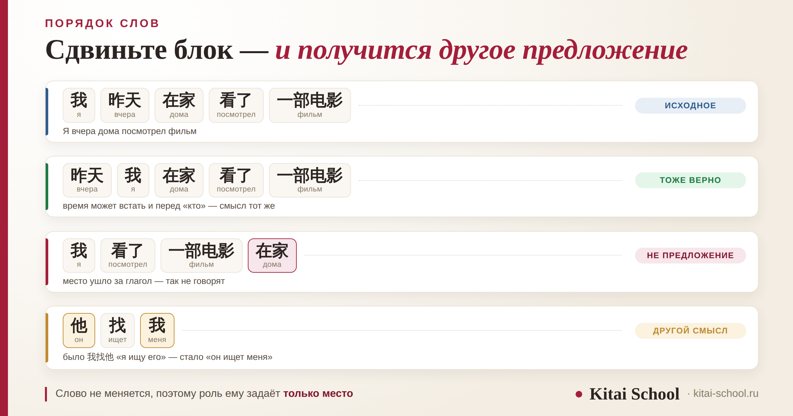
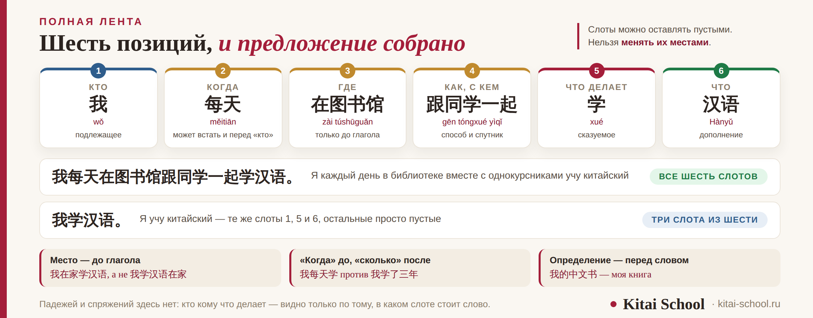

Грамматика
Как составлять предложения на китайском: базовая схема и логика порядка слов


Китайское предложение собирается из блоков, и у каждого блока есть своё место. Падежей и спряжений здесь нет, поэтому роль слову задаёт только позиция: переставили — получили другой смысл или вовсе не предложение. Ниже — базовая схема, полная лента из шести позиций, четыре русские привычки, которые сбивают чаще всего, и разбор готовых примеров.
Основа — «кто — что делает — что», как в русском. Всё остальное встаёт перед глаголом в строгом порядке: когда, где, как и с кем. Место после глагола не ставят — это самая заметная ошибка. «Когда» идёт до глагола, «сколько времени» — после. Определение всегда стоит перед тем, что определяет, и то же правило работает в датах и адресах: от большого к маленькому.
Короткий ответ: три слова и всё остальное
Основа китайского предложения совпадает с русской и выглядит привычно: кто — что делает — что.
- 我喝茶。 wǒ hē chá — «я пью чай».
- 他学汉语。 tā xué Hànyǔ — «он учит китайский».
- 我是老师。 wǒ shì lǎoshī — «я учитель».
На этом совпадение заканчивается. Как только к трём словам добавляются подробности — когда, где, с кем, каким способом, — русский разрешает ставить их куда угодно, а китайский отводит каждой подробности своё место, и место это почти всегда перед глаголом.
Одна оговорка к этой тройке: сказуемым может быть и прилагательное, и тогда глагол не нужен вовсе. 他很高。 tā hěn gāo — «он высокий», дословно «он очень высокий», без всякого «есть». Русскому уху не хватает связки, но вставлять сюда 是 нельзя: оно соединяет два существительных, а не предмет с его признаком.
Запомнить проще всего так: всё, что уточняет действие, в китайском произносится раньше самого действия. Сначала обстановка, потом поступок.
Почему порядок здесь работает за падежи
Китайское слово не меняет формы. У него нет окончаний, по которым видно, кто действует, а кто принимает действие. Значит, эту работу должно делать что-то другое — и её делает позиция.
Проверить легко. Возьмём три слова и поменяем местами два из них:
- 我找他。 wǒ zhǎo tā — «я ищу его»;
- 他找我。 tā zhǎo wǒ — «он ищет меня».
Ни одно слово не изменилось, а предложение стало другим. В русском такого не происходит: «я ищу его» и «его ищу я» значат одно и то же, потому что роль каждого слова видна по окончанию. В китайском окончаний нет — и роль видна только по месту.
Отсюда вывод, который экономит много времени на старте: заучивать таблицы форм не придётся вообще, но схему придётся довести до автоматизма. Что именно должно быть в программе, которая этому учит, разобрано отдельно: курс по грамматике китайского языка.
Полная лента: шесть позиций
Если выписать все места подряд, получится лента, по которой собирается почти любое повествовательное предложение. Главное её свойство: слоты можно оставлять пустыми, но нельзя менять местами. Предложение из трёх слов и предложение из двенадцати устроены одинаково — просто во втором заполнено больше ячеек.
Посмотрим, как фраза растёт по одному слоту:
- 我学汉语。 — «я учу китайский»;
- 我每天学汉语。 — «я каждый день учу китайский»;
- 我每天在家学汉语。 — «я каждый день дома учу китайский»;
- 我每天在家跟妈妈一起学汉语。 — «я каждый день дома вместе с мамой учу китайский».
Обратите внимание: русский перевод с каждым шагом перестраивается, а китайская фраза только удлиняется слева от глагола. Новые подробности вставляются в свои ячейки, ничего не сдвигая.
Одно послабление: время может встать и перед подлежащим. 昨天我们在学校开会。 zuótiān wǒmen zài xuéxiào kāihuì — «вчера мы в школе проводили собрание». Это нормальный вариант, и он часто звучит естественнее. Остальные блоки своих мест не меняют.

Первое, что сбивает: место за глаголом
По-русски «я учу китайский дома» звучит нормально, и по-китайски хочется написать то же самое.
- 我在家学汉语。 wǒ zài jiā xué Hànyǔ
- 我学汉语在家。
Второй вариант китаец не просто не одобрит — он его не узнает как предложение. Место действия входит в обстановку, а обстановка в китайском проговаривается до действия.
Исключение, которое стоит знать сразу, чтобы потом не растеряться: у нескольких глаголов место действительно стоит справа, но там оно отвечает не на вопрос «где происходит», а на вопрос «где оказалось».
- 他住在北京。 tā zhù zài Běijīng — «он живёт в Пекине»;
- 书放在桌子上。 shū fàng zài zhuōzi shang — «книга лежит на столе».
Таких глаголов немного, и они запоминаются вместе с 在 как одно целое. Общее правило это не отменяет.
Три года против каждого дня
Второе место, где сбивает русский, стоит отдельного разговора. «Каждый день» и «три года» по-русски называются одинаково — обстоятельством времени, — и это сходство обманывает. В китайском это два разных блока, и стоят они по разные стороны от глагола.
| Вопрос | Где стоит | Примеры |
|---|---|---|
| Когда? | перед глаголом | 每天 měitiān, 昨天 zuótiān, 下个月 xià ge yuè |
| Сколько времени? Сколько раз? | после глагола | 三年 sān nián, 两个小时 liǎng ge xiǎoshí, 两遍 liǎng biàn |
- 我每天学汉语。 — «я каждый день учу китайский»;
- 我学了三年汉语。 wǒ xuéle sān nián Hànyǔ — «я учил китайский три года».
Девушка готовилась к собеседованию на стажировку и выучила рассказ о себе наизусть. Первая же фраза звучала как 我三年学中文. Слова были верные, а собеседник, по её словам, переспросил.
Разбирались недолго. В её голове «три года» было обстоятельством времени, а значит, по логике прошлых уроков, должно было стоять перед глаголом. Но «три года» отвечает не на вопрос «когда», а на вопрос «сколько» — и такие слова уходят за глагол: 我学了三年中文。
Мы расчертили лист на две колонки. Слева — «когда»: 每天, 昨天, 下个月. Справа — «сколько»: 三年, 两个小时, 五遍. И одно правило к ним: левая колонка идёт до глагола, правая — после. Дальше она переводила по десять фраз в день, вперемешку из обеих колонок.
На собеседовании вопрос про опыт оказался первым. Фразу она собрала правильно — и, что важнее, уже не вспоминала правило, а просто слышала, что так звучит верно.
Есть отдельная тонкость для тех, кто уже знает такие слова, как 见面 или 帮忙: внутри них уже спрятано дополнение, и вставки ведут себя не так, как ожидаешь. Это разобрано в статье про раздельно-сочетаемые глаголы.
Определение — всегда перед словом
Третье место, где китайский строже русского: никаких «книга интересная» с перестановкой для красоты. Что бы ни описывало существительное — одно слово или целый оборот, — описание идёт перед ним.
- 我的中文书 wǒ de Zhōngwén shū — «моя книга по китайскому»;
- 一本很有意思的书 yì běn hěn yǒu yìsi de shū — «очень интересная книга».
Чем длиннее определение, тем длиннее хвост перед существительным — и тем непривычнее это выглядит для русского глаза. Но правило не знает исключений: определяемое слово всегда последнее. Если вы дочитали оборот и ещё не поняли, о чём речь, значит, главное слово впереди.
У той же логики есть продолжение, которое закрывает сразу две бытовые темы — счёт от большого к маленькому.
- 2026年10月3日 — год, месяц, день;
- 中国山东省济南市 Zhōngguó Shāndōng shěng Jǐnán shì — страна, провинция, город.
Русский порядок здесь ровно обратный, и именно поэтому даты и адреса на старте пишут задом наперёд чаще остального. Правило одно и то же: сначала то, что больше и общее, потом то, что меньше и точнее. Как устроены часы и минуты — разобрано отдельно: как называть время.
Что порядок не меняет
Хорошая новость: две вещи, которые в европейских языках перестраивают предложение, в китайском не делают с ним ничего.
- Вопрос. Утверждение 你学汉语。 превращается в вопрос добавлением одного слова в конце: 你学汉语吗？ Порядок остался прежним. Подробно про эту частицу — здесь: всё о частице 吗.
- Специальный вопрос. Вопросительное слово встаёт туда, где будет ответ, и никуда не выносится: 你学什么？ nǐ xué shénme — «что ты учишь?». Все схемы собраны в разборе конструктор вопросов в китайском.
- Отрицание. 不 и 没 встают перед глаголом и тоже ничего не двигают: 我不学汉语。, 我没去。 А что происходит, когда отрицаний два, разобрано отдельно: двойное отрицание в китайском.
То есть схема одна, а вопрос и отрицание — это добавления к ней, а не перестройка. На практике это означает, что схема, отработанная на утверждении, сразу работает и в вопросе, и в отрицании.
Когда лента всё-таки сдвигается
Два случая, в которых блоки меняют места. Оба относятся к следующему уровню, и здесь они — чтобы вы узнали их в тексте и не решили, что правило не работает.
- Конструкция с 把. Дополнение встаёт перед глаголом, а не после него: 我把书放在桌子上。 wǒ bǎ shū fàng zài zhuōzi shang — «я положил книгу на стол». Так говорят, когда важно, что именно сделали с предметом.
- Вынос темы. Предмет разговора ставят в начало, а дальше идёт обычное предложение: 这本书我看过。 zhè běn shū wǒ kànguo — «эту книгу я читал». По-русски похожий эффект даёт интонация.
Обе конструкции разбирают, когда базовая схема уже не требует усилий. До этого момента их лучше узнавать, но не строить самостоятельно.
Как это отрабатывают
Схема становится рабочей не от объяснения, а от повторения. Приём простой и давно проверенный.
- Возьмите русскую фразу из обычной жизни: «я вчера вечером в метро слушал музыку».
- Разложите её по вопросам, вслух: кто — когда — где — как — что делает — что.
- Соберите в китайском порядке, не трогая русский вариант: сначала кто, потом время, потом место, потом глагол.
- Проверьте одно: не ушло ли место за глагол и не перепутаны ли «когда» и «сколько».
- Повторяйте по десять фраз, пока сборка не перестанет требовать паузы.
Словарь для этого нужен минимальный: чем проще слова, тем виднее схема. Полсотни глаголов на бытовые фразы собраны здесь: топ-50 базовых глаголов, а связки для сложных предложений — в разборе союзы и связки.
Разбор пяти предложений
Собрано всё вместе: слева фраза, в середине — по каким слотам она разложена.
| Предложение | По слотам | Перевод |
|---|---|---|
| 我喝茶。 | кто · делает · что | я пью чай |
| 我昨天看了一部电影。 | кто · когда · делает · что | я вчера посмотрел фильм |
| 他在学校学汉语。 | кто · где · делает · что | он в школе учит китайский |
| 我跟朋友一起去。 | кто · с кем · делает | я иду вместе с другом |
| 我学了两个小时。 | кто · делает · сколько | я занимался два часа |
Пятая строка — та самая, где блок стоит справа от глагола. Если вы её узнаёте без подсказки, схема уже работает.
Разобраться в схеме можно и самостоятельно, а вот довести её до автоматизма — сложнее: нужен человек, который услышит сдвинутый блок и остановит сразу, пока ошибка не стала привычкой. На занятиях мы начинаем со сборки простых фраз и возвращаемся к ней при каждой новой теме: онлайн-курсы китайского. Оставить заявку или написать в Telegram.
Частые вопросы (FAQ)
Какой порядок слов в китайском предложении?
Основа совпадает с русской: кто — что делает — что, то есть подлежащее, сказуемое, дополнение. Отличие в подробностях: время, место, способ и спутник встают не после глагола, а перед ним, и в строгой последовательности — кто, когда, где, как и с кем, что делает, что. Пустые слоты допустимы, перестановка — нет.
Куда ставить время и место в китайском предложении?
Оба блока идут перед глаголом, причём время раньше места: 我每天在家学汉语 — «я каждый день дома учу китайский». У времени есть послабление: оно может встать и перед подлежащим, например 昨天我们在学校开会. У места такого послабления нет — оно всегда перед глаголом.
Почему нельзя сказать 我学汉语在家?
Потому что место действия в китайском входит в обстановку, а обстановка проговаривается до самого действия. Фраза с местом после глагола не воспринимается как ошибка внутри предложения — она просто не опознаётся как предложение. Правильно: 我在家学汉语.
Меняется ли порядок слов в вопросе?
Нет, и это одна из самых приятных особенностей китайского. Общий вопрос получается добавлением 吗 в конец утверждения: 你学汉语 — 你学汉语吗？ А вопросительное слово в специальном вопросе встаёт ровно туда, где будет ответ, и никуда не выносится: 你学什么？ Отрицание тоже ничего не двигает: 不 и 没 встают перед глаголом.
Как сказать «я учу китайский три года»?
我学了三年汉语. Важно, что «три года» здесь стоит после глагола, а не перед ним. Слова, отвечающие на вопрос «когда» (每天, 昨天), идут до глагола, а отвечающие на вопрос «сколько времени» или «сколько раз» (三年, 两个小时, 两遍) — после. По-русски и то и другое называется обстоятельством времени, и это сходство сбивает чаще всего.
Как быстрее довести схему до автоматизма?
Переводить короткие фразы с русского по одной и той же последовательности вопросов: кто — когда — где — как — что делает — что. Словарь для этого нужен минимальный: чем проще слова, тем виднее схема. Проверять каждый раз стоит две вещи — не ушло ли место за глагол и не перепутаны ли «когда» и «сколько».
Дальше по теме: с чего начать с нуля; этапы изучения китайского; курс по грамматике; конструктор вопросов; и про глаголы — базовые глаголы.
Источники
- Практика Kitai School — занятия со взрослыми и подростками с нуля: разбор типичных ошибок в порядке слов и упражнения на сборку фраз.
- Терминология и примеры даны в том виде, в каком они используются в учебных курсах китайского как иностранного; пиньинь приведён с тонами.
- Оговорка: статья описывает базовую схему повествовательного предложения. Конструкции с 把 и 被, вынос темы и сложные предложения упомянуты только как случаи, в которых схема сдвигается, и требуют отдельного разбора.
Пусть блоки встают на свои места! 加油！